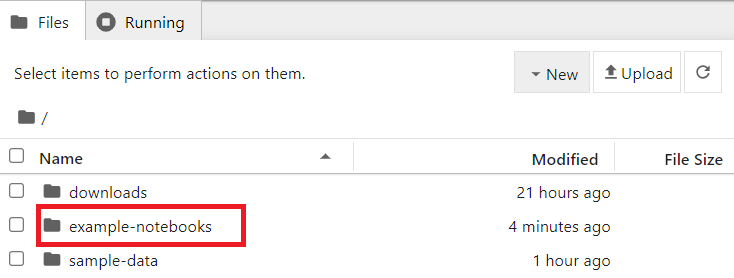
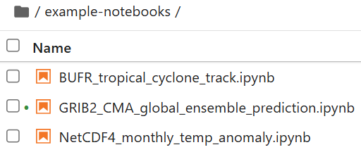
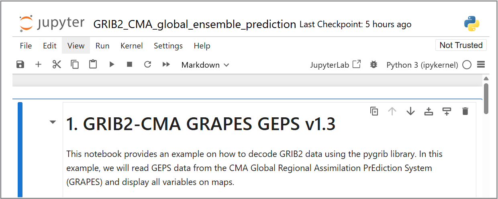
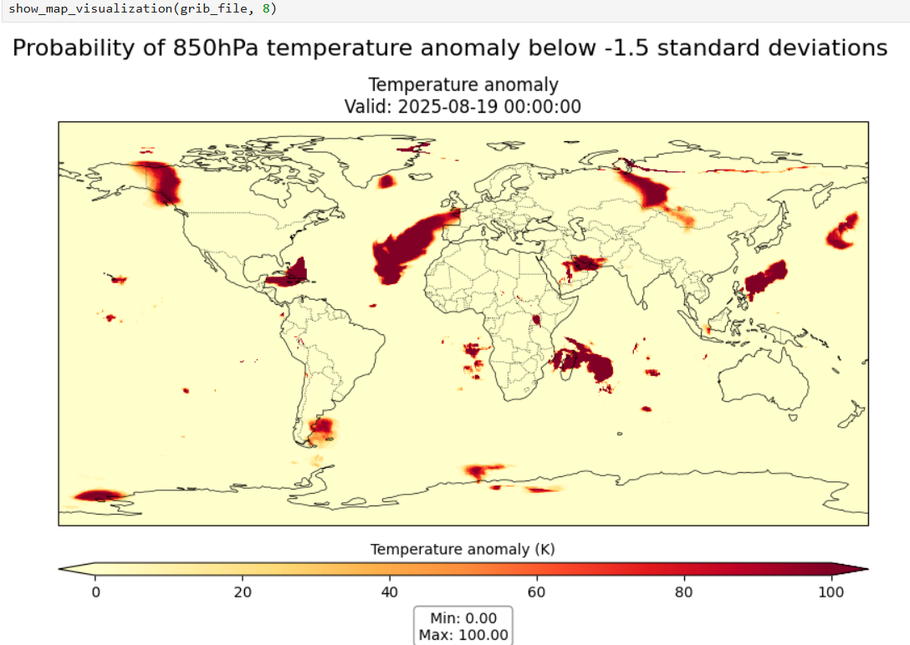
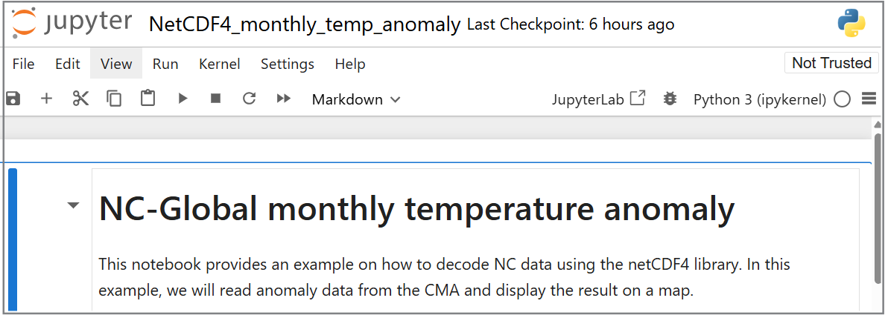
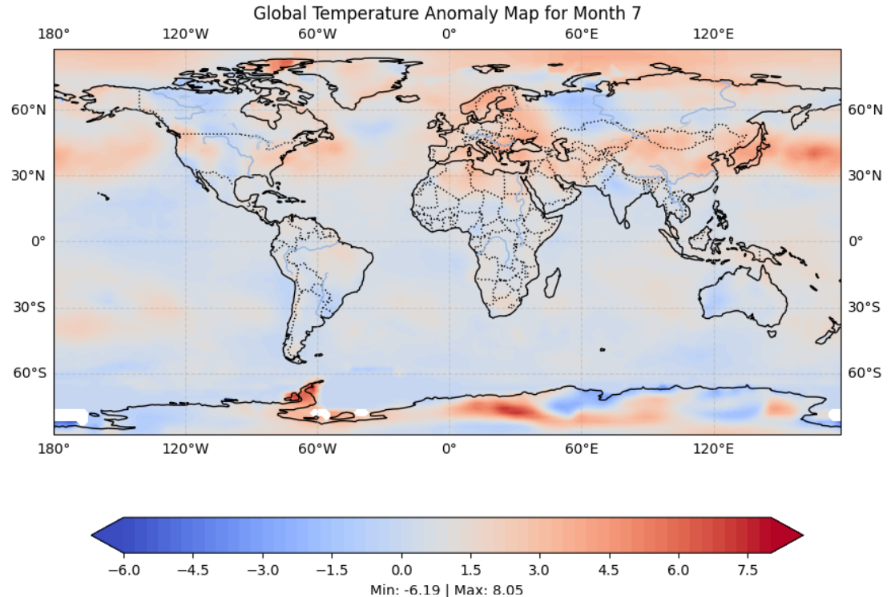

解码WMO二进制格式数据
学习目标！
在本次实践课程结束时，您将能够：
- 运行 "demo-decode-eccodes-jupyter" 镜像的Docker容器
- 运行示例Jupyter笔记本以解码GRIB2、NetCDF和BUFR格式的数据
- 学习其他解码和可视化WMO表驱动代码格式（TDCF）的工具
介绍
WMO二进制格式（如BUFR和GRIB）被气象领域广泛用于观测和模式数据的交换，通常需要专门的工具来解码和可视化这些数据。
从WIS2下载数据后，您通常需要解码这些数据以便进一步使用。
有多种代码库可用于编写脚本或程序来解码WMO二进制格式。此外，还有一些工具提供用户界面，无需编写软件程序即可解码和可视化数据。
在本次实践课程中，我们将通过Jupyter笔记本演示如何解码三种不同类型的数据：
- GRIB2：包含CMA全球区域同化预测系统（GRAPES）生成的全球集合预测数据
- BUFR：包含来自ECMWF集合预报系统的热带气旋路径数据
- NetCDF：包含月度温度异常数据
在Jupyter笔记本中解码下载的数据
为了演示如何解码下载的数据，我们将使用 'decode-bufr-jupyter' 镜像启动一个新容器。
该容器将在您的实例上启动一个Jupyter笔记本服务器，其中包含ecCodes库，您可以使用它来解码BUFR数据。
我们将使用 ~/exercise-materials/notebook-examples 中包含的示例笔记本来解码热带气旋路径的下载数据。
要启动容器，请使用以下命令：
docker run -d --name demo-decode-eccodes-jupyter \
-v ~/wis2box-data/downloads:/root/downloads \
-p 8888:8888 \
-e JUPYTER_TOKEN=dataismagic! \
ghcr.io/wmo-im/wmo-im/demo-decode-eccodes-jupyter:latest
以下是上述命令的分解说明：
docker run -d --name demo-decode-eccodes-jupyter启动一个新的容器，使用分离模式（-d）并命名为demo-decode-eccodes-jupyter-v ~/wis2box-data/downloads:/root/downloads将您的虚拟机上的~/wis2box-data/downloads目录挂载到容器中的/root/downloads。这是存储从WIS2下载数据的地方-p 8888:8888将虚拟机上的8888端口映射到容器中的8888端口。这使得您可以通过浏览器访问Jupyter笔记本服务器，地址为http://YOUR-HOST:8888-e JUPYTER_TOKEN=dataismagic!设置访问Jupyter笔记本服务器所需的令牌。当您从浏览器访问服务器时需要提供此令牌ghrc.io/wmo-im/demo-decode-eccodes-jupyter:latest指定容器使用的镜像，该镜像预先包含了下一步练习中使用的示例Jupyter笔记本
关于 demo-decode-eccodes-jupyter 镜像
demo-decode-eccodes-jupyter 是为本次培训开发的镜像，基于包含ecCodes库的基础镜像，添加了Jupyter笔记本服务器以及用于数据分析和可视化的Python包。
此镜像的源代码，包括示例笔记本，可以在 wmo-im/demo-decode-eccodes-jupyter 找到。
容器启动后，您可以通过浏览器访问 http://YOUR-HOST:8888 来访问Jupyter笔记本服务器。
您将看到一个页面，要求输入“密码或令牌”。
输入令牌 dataismagic! 登录Jupyter笔记本服务器（除非您在上述命令中使用了不同的令牌）。
登录后，您应该会看到以下页面，列出了容器中的目录：

双击 example-notebooks 目录以打开它。您应该会看到以下页面，列出了示例笔记本：

现在，您可以打开示例笔记本以解码下载的数据。
GRIB2解码示例：CMA GRAPES的GEPS数据
打开 example-notebooks 目录中的文件 GRIB2_CMA_global_ensemble_prediction.ipynb：

阅读笔记本中的说明并运行单元格以解码全球集合预测的下载数据。通过点击单元格并点击工具栏中的运行按钮，或者按下 Shift+Enter 来运行每个单元格。
执行所有单元格后，您应该会看到一个关于“850hPa温度异常低于-1.5标准差的概率”的可视化图：

Question
您如何更新此笔记本中的可视化，以显示GRIB2文件中其他消息的可视化？
点击查看答案
在笔记本的最后一个单元格中，您会看到以下代码：
# 显示消息编号为8的可视化（850hPa温度异常低于-1.5标准差的概率）
show_map_visualization(grib_file, 8)
您可以通过更改消息编号来更改此行或添加另一行，以可视化GRIB2文件中的其他消息：
# 显示消息编号为9的可视化
show_map_visualization(grib_file, 9)
然后重新运行笔记本中的单元格以查看更新后的图表。
BUFR解码示例：热带气旋路径
打开 example-notebooks 目录中的文件 BUFR_tropical_cyclone_track.ipynb：

阅读笔记本中的说明并运行单元格以解码热带气旋路径的下载数据。通过点击单元格并点击工具栏中的运行按钮，或者按下 Shift+Enter 来运行每个单元格。
最后，您应该会看到一个关于热带气旋路径的概率图：

Question
结果显示了热带风暴路径在200公里范围内的预测概率。您如何更新笔记本以显示热带风暴路径在300公里范围内的预测概率？
点击查看答案
要更新笔记本以显示不同距离范围内的预测概率，您可以更新计算命中概率的代码块中的 distance_threshold 变量。
要显示热带风暴路径在300公里范围内的预测概率，请修改为：
# 设置距离阈值（米）
distance_threshold = 300000 # 300公里，单位为米
然后重新运行笔记本中的单元格以查看更新后的图表。
解码BUFR数据
您刚刚完成的练习提供了一个使用ecCodes库解码BUFR数据的具体示例。不同的数据类型可能需要不同的解码步骤，您可能需要参考您正在处理的数据类型的文档。
更多信息请参考 ecCodes文档。
NetCDF解码示例：月度温度异常
打开 example-notebooks 目录中的文件 NetCDF4_monthly_temperature_anomaly.ipynb：

阅读笔记本中的说明并运行单元格以解码月度温度异常的下载数据。通过点击单元格并点击工具栏中的运行按钮，或者按下 Shift+Enter 来运行每个单元格。
最后，您应该会看到一个温度异常的地图：

解码NetCDF数据
NetCDF是一种灵活的格式，在本示例中，变量 'anomaly' 的值是沿 'lat' 和 'lon' 维度报告的。不同的NetCDF数据集可能使用不同的变量名称和维度。
使用其他工具查看和解码WMO二进制格式
示例笔记本演示了如何使用Python解码常用的WMO二进制格式。
您还可以使用其他工具解码和可视化WMO表驱动代码格式，而无需编写软件，例如：
- Panoply - 一个跨平台应用程序，可从NetCDF、HDF、GRIB和其他数据集中绘制地理参考和其他数组
- ECMWF Metview - 一个用于数据分析和可视化的气象应用程序，支持GRIB和BUFR格式
- Integrated Data Viewer (IDV) - 一个免费的基于Java的软件框架，用于分析和可视化地球科学数据，包括支持GRIB和NetCDF格式
总结
恭喜！
在本次实践课程中，您学习了如何：
- 运行 "demo-decode-eccodes-jupyter" 镜像的Docker容器
- 运行示例Jupyter笔记本以解码GRIB2、NetCDF和BUFR格式的数据